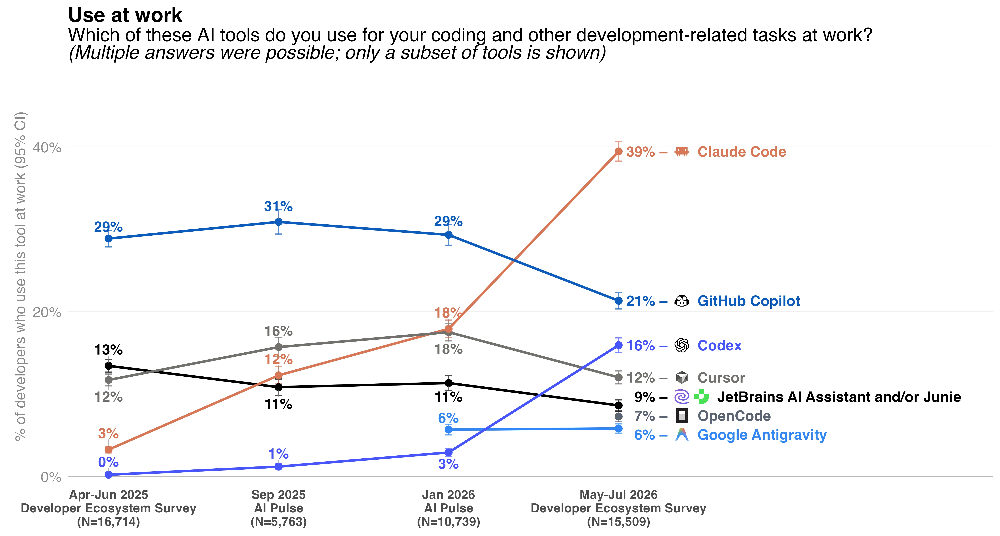

AI Coding Agents
Simon Guest
Software transformation
- In the past 12 months, coding agents have transformed decades-old methods of writing software
- As of July 2026, 90% of professional developers are using coding agents weekly (source: JetBrains Dev Ecosystem survey)
- 68% of them using agents daily
Software transformation
- Rapid acceleration of coding tools
- Claude Code used by 40% of developers (from 18% in Jan 2026)
- Codex used by 16% of developers (from 3% in Jan 2026)
- Claude Code creator, Boris Cherny, stated that 100% of his contributions to Claude Code are written by Claude Code
- 80% of code at Anthropic is written by Claude Code (as of May 2026)
How did we get here?
- 2020 - GPT-3 (OpenAI): not trained specifically on code, but surprised researchers by generating coherent snippets
- 2021 - OpenAI Codex: GPT-3 fine-tuned on 54M GitHub repos (~159GB of Python)
- 2021 - GitHub Copilot technical preview: first public coding agent, powered by Codex
How did we get here?
- While the models were trained on code, the developer experience was still basic:
- Glorified auto-complete
How did we get here?
{kind=link}
How did we get here?
- In addition…
- Limited ability to ask questions about the codebase
- Many context limit challenges
- Trying to understand the whole of the repo in window was virtually impossible
How did we get here?
- Two major developments in 2023+:
- Context windows grew from 4k → 128k → 1M+ tokens
- Models could reason across entire codebases
- Introduction of the coding harness or now most commonly known, coding agent
How did we get here?
- Early coding agents
- Devin, Aider, Cursor
- Agents that could read files, make edits, and run tests with limited human intervention
- Showed promise on benchmarks (18% on SWE-Bench) but…
- Explicit plan and work modes
- Often one-shot suggestions that ran in a loop
- Devin, Aider, Cursor
Today’s coding agents
- Multi-step planners and reasoners
- Tool access (bash, web, python, etc.)
- Manage their context (through memory, skills, etc.)
- Manage their reasoning effort (model selection)
- Often delegate to multiple, background agents for tasks
Using a coding agent
{kind=link}
Using a coding agent - CLI
{kind=link}
Using a coding agent - IDE
{kind=link}
Using a coding agent - Desktop
{kind=link}
Using a coding agent - Mobile
{kind=link}
Components of a coding agent
CLAUDE.md(AGENTS.md)- Injected at the start of every conversation
- Introduces the coding agent to your project/repo/architecture
- Also used for style conventions/preferences
- Can have multiple
CLAUDE.md/AGENTS.mdfiles in hierarchy - Examples
Components of a coding agent
SKILL.md- Separate skill file, loaded on-demand by the agent
- Used for defining how specific features are developed
- New web components for a site
- How content should be translated/localized
- Helps reduce the size of
CLAUDE.md/AGENTS.md
Demo
Using Claude Code to build a simple todo app
“Vibe coding”
- Coined by AI researcher Andrej Karpathy in early 2025
- “fully gives into the vibes”
- Focuses on the creative direction and outcomes vs. the individual lines of syntax
“Vibe coding”
- Can be tempting:
- Create an issue in GitHub, send a coding agent to work on it, monitor it from your mobile phone
- But, you lose control of the architecture
- “Don’t let AI build faster than you are capable of understanding”
- https://blog.ploeh.dk/2026/09/16/on-learning-programming-in-an-age-of-llms/
- Analogy to the Winchester Mystery House
“Vibe coding”

Agents as “power tools”
- I prefer “power tool” approach:
- Own the architecture / frame out the house
- Carefully hand-build / build the frame
- Then use AI to fill in the details for each room
Agents as “power tools”
{kind=link}
Agents as “power tools”
- Mapping this to Claude Code
CLAUDE.mdshould describe the architecture of the system (analogy: house frame)SKILL.mdshould describe each area that Claude can contribute to (analogy: working on each room)
Introducing my lifecycle
- I’ve been writing software for 25+ years
- Shipped multiple products at Microsoft, IBM, SAP, Amazon, Code.org, and others
- Today, Claude is writing close to 100% of my code
- In many ways, that’s really scary!
- Many professional developers are still working out the best way to work with coding agents
- I’ve found the following lifecycle works (for me)
Introducing my lifecycle
- Plan - plan a feature
- Act - build the feature
- Test - test the feature
- Abort - abort the session if needed
- Review - carefully review what changed
- Commit - commit to source control
- Clear - clear the current conversation
Introducing my lifecycle
- Plan
- Start by writing the specification for the feature
- Separate mark down file, descriptive, bullet points help
- Ask the agent to validate/question the approach
- “What questions and/or clarifications do you have?”
- Push back on things that seem incorrect
Introducing my lifecycle
{kind=link}
Introducing my lifecycle
- Act
- Once happy with the specification, ask Claude to implement
- Watch carefully for file changes/updates
- Correct approach mid-stream
- “One minute - I think there’s a 3rd party library for that…”
Introducing my lifecycle
- Test
- Test the feature locally / manually
- Build a complete test suite - I would recommend Playwright
- (Agents are really good at writing tests)
- Have the agent run it’s own tests after the feature (you can specify this into the
CLAUDE.mdfile)
Demo
Test suite example
Introducing my lifecycle
- Abort
- Sometimes, things don’t work as expected!
- It can be challenging to fix before exhausting the context window
- And often coding agents will “spin out of control”
git stash, clear context (new session), update the feature spec, and restart
Introducing my lifecycle
- Review
- What did the agent generate?
- Are the tests well written / did it run the test suite?
- Does
CLAUDE.mdneed to be updated? Any new skills to create from this feature? - Auto-compact if approaching ~100K (hard limit at 150K)
Introducing my lifecycle
- Commit
- I choose what to commit and when!
- (I give access to the
gitcommand line for history access, but forbid the agent permission to commit on my behalf)
Introducing my lifecycle
- Clear
- Once
CLAUDE.mdand feature is committed, clear context (/newin Claude Code) - Analogy: 50 First Dates movie
- Once
Introducing my lifecycle
{kind=link}
Other ways of using agents
- Ask for general guidance on an existing repo/architecture
- Writing tests for an existing repo (especially if you don’t have any)
- Repetitive tasks that you need to do manually (e.g., image background generation)
- Configuration / infrastructure files (e.g., .gitignore)
- Synthetic data generation (e.g., sample json files)
Coding agents anti-patterns
- Doing too much
- e.g., “I’ve created a README.md file for you”
- Wanting too much access
- e.g., gating on tool usage / token cost / shutting down my dev server
- Fragile tests
- e.g., creating tests that used production data which changed
- CSS
- Much better now, but often CSS overhangs and misalignment
Options and costs
- Many different agents. Most popular (in order):
- Claude Code
- GitHub Copilot
- OpenAI Codex
- Cursor
- JetBrains Junie
- Google Antigravity
Options and costs

Options and costs
- Monthly subscription
- Subs run between $20/mo - $200/mo
- Daily/weekly max token limits
- Option to “top up” if you go over
Options and costs
{kind=link}
Options and costs
- Pay-as-you-go API
- Either with developer account or via OpenRouter
- No monthly commitment, but much higher costs
- $20 -> ~$2K if tokens are managed well
- OpenRouter does have much cheaper options
- Sonnet 5 = $2/M input; $10/M output
- Qwen 3.8 = $0.15/M input; $1.875/M output
Options and costs
- “Tokenmaxxing” - org-based developer leaderboards
- Being frugal with tokens
- Don’t vibe code your app!
- Choose models carefully (Sonnet vs. Opus vs. Fable)
- Spread requests throughout the day
- Limit access to testing tools (e.g., Chrome browser access)
Can I run coding agents locally?
- Yes, albeit with many caveats:
- You’ll need a well-spec’d laptop
- Token generation will be slower
- Models have much smaller context windows
- Good for small, focused features
- Great for long-running, synthetic data generation
- Offline access with no API costs
Can I run coding agents locally?
- OpenCode is an open-source, terminal-based AI coding agent
- Runs entirely locally using any OpenAI-compatible API server (e.g., LM Studio)
- Reads and edits files, runs shell commands, and iterates on code
- Model-agnostic Swap in any local model (Qwen, DeepSeek, Llama, etc.) via a config file
Demo
OpenCode running with local model
Using coding agents in CSP
- Our guidelines for using coding agents in CSP
- Don’t vibe code your project!
- Remember the house frame analogy - you’ll want to create this by hand first
- If using a coding agent, we will require overview of usage (and conversation transcripts) at each milestone presentation
- You/your team is responsible for costs
Q&A